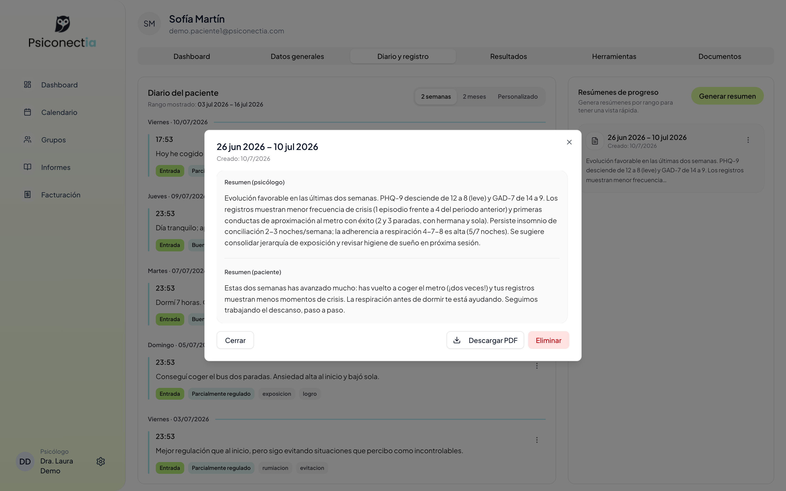
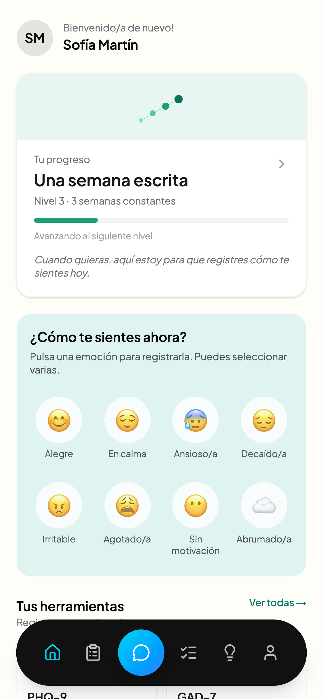

El ecosistema que mantiene el hilo.
Entre una sesión y la siguiente pasan siete días de emociones, avances y recaídas que muchas veces se pierden. Psiconectia une los dos lados de la terapia en un mismo espacio.
¿Cuántas horas pierdes gestionando, en vez de acompañando?
Seguimiento disperso por WhatsApp, notas releídas a última hora, informes redactados de madrugada y siete días de silencio entre sesiones.
Toda tu consulta en una sola pantalla.
Agenda + Google Calendar + Meet
Sesiones presenciales o telemáticas. Se sincronizan solas y la videollamada de Meet se crea automáticamente.
Contexto real entre sesiones
El diario y los registros de tu paciente llegan a su ficha en tiempo real. Llegas a consulta sabiendo cómo ha ido la semana, no preguntándolo.
Herramientas por paciente
Activa con un toggle PHQ-9, GAD-7, PSQI, registro ABCD, rueda de la vida o tareas. Los resultados vuelven a ti, ordenados y comparables.
Informes de progreso con IA
Un clic y la IA redacta el resumen intersesión a partir de los datos reales: evolución emocional, detonantes y sugerencias. Tú revisas, ajustas y firmas.
Facturación conforme a Verifactu
Cobra con Stripe y emite factura conforme a la AEAT (RD 1007/2023) sin salir de la plataforma.
Grupos con resumen IA colectivo
Crea grupos terapéuticos y recibe la dinámica colectiva, participación y diferencias individuales por periodo.
Los datos que ya estamos viendo.
(vs 3,3% en apps genéricas)

La evidencia externa apunta en la misma dirección: el seguimiento sistemático entre sesiones se asocia a un −20 % de abandono del tratamiento (de Jong, 2021 · meta-análisis de 58 estudios, n=21.699).
«Llego a la sesión sabiendo exactamente por dónde empezar.»
«Sustituyó el WhatsApp disperso y la relectura de notas por un briefing de dos minutos antes de cada sesión. Mi carga real añadida es cero.»
«Que el paciente nunca me escriba directamente y aun así yo lo vea todo ordenado era justo lo que necesitaba para poner límites sin perder el hilo.»
«Mis pacientes registran más de tres veces por semana. Ese contexto, antes de Psiconectia, simplemente no existía entre sesión y sesión.»
«El informe de progreso con IA me quita la parte más tediosa del trabajo. Yo reviso, ajusto un par de frases y firmo.»
«Tuve una alerta de riesgo y el protocolo hizo exactamente lo que debía: recursos al paciente, aviso a mí y todo registrado. La decisión clínica fue mía en todo momento.»
«Activo a cada paciente solo las herramientas que necesita — PHQ-9, ABCD, tareas — y los resultados me vuelven ordenados y comparables. Se acabó perseguir cuestionarios.»
Testimonios del programa beta 2025–2026, anonimizados · n=56 pacientes · 5 consultas · utilidad clínica percibida 8,1/10 · fotos ilustrativas para proteger la identidad
De cero a tu primer informe IA en una semana.
Crea tu cuenta
Dos minutos y estás dentro. Tu agenda y tu primer paciente configurados hoy mismo.
Invita a tu primer paciente
Recibe la app en su móvil y empieza a registrar. Tú decides qué herramientas activar.
Llega a sesión con contexto
Panel pre-sesión y primer informe de progreso generado con IA esa misma semana.
Un único plan. Todo incluido.
Sin tiers, sin letra pequeña, sin funciones capadas. Todo Psiconectia por menos de lo que cuesta media sesión.
- Agenda + Google Calendar + videollamadas Meet
- Diario y registros del paciente en tiempo real
- Herramientas activables: PHQ-9, GAD-7, PSQI, ABCD, rueda de la vida…
- Informes de progreso generados con IA
- Facturación conforme a Verifactu (AEAT)
- Grupos terapéuticos con resumen IA colectivo
- Varios psicólogos y pacientes
- Implantación acompañada
- App con vuestra marca (opcional)
- Early Adopter: tarifa bloqueada de por vida
Las objeciones, de frente.
¿Esto no me añade más trabajo?
Los beta testers reportan 8–12 minutos por semana por paciente activo y un briefing pre-sesión de 2–3 minutos. La carga neta añadida es cero: sustituye el seguimiento disperso (WhatsApp, relectura de notas) por un resumen estructurado. Tú consumes datos; no los produces.
¿Los pacientes me van a escribir a todas horas?
No. Psiconectia no tiene bandeja de entrada por diseño: el paciente nunca te escribe directamente. Interactúa con su espacio de apoyo, y los recursos de emergencia (024, 112) están siempre visibles en su app.
¿Qué pasa si un paciente está en riesgo?
Psiconectia nunca toma decisiones clínicas. Detecta señales (PHQ-9/GAD-7 y análisis del espacio de apoyo), muestra recursos al paciente, te avisa y lo registra todo con marca de tiempo. La decisión clínica es siempre tuya. En la beta: 2 alertas, 2 bien gestionadas, 0 incidentes.
¿Y mis datos y los de mis pacientes?
Datos de categoría especial tratados conforme al RGPD, con auditoría de cada flujo que los toca. Exportación universal en CSV/PDF en cualquier momento: los datos son tuyos y de tus pacientes, no nuestros.
¿La IA diagnostica o trata?
No. No es software sanitario (guía MDCG 2019-11): no diagnostica, no recomienda tratamiento, no interviene. La IA ordena y resume la información real del paciente para que tú trabajes mejor.
Empieza hoy con el plan único.
Y si tienes una clínica, aún llegas a tiempo.
El programa Early Adopter sigue disponible para clínicas: tarifa bloqueada de por vida, co-diseño del producto y referencia en la publicación clínica de 2026.
Hay una parte de tu proceso que ocurre fuera de la consulta.
Esta app está pensada para acompañarte justo ahí. Sin promesas raras: te acompaña, registra lo que tú quieras contar y mantiene el hilo con tu psicólogo.
¿Cómo te sientes ahora?
Registra hasta tres emociones al día. Sin escribir si no te apetece.

Tu diario, tu recorrido.
Tu diario
Guarda lo que quieras contarle y te enseña tu semana de un vistazo, para que tú también veas tu propio recorrido.
Espacio de apoyo · 24/7
Un momento de calma a cualquier hora, con ejercicios sencillos como la respiración 4-7-8 o el grounding 5-4-3-2-1.
Herramientas de tu psicólogo
Cuestionarios, tareas o tu rueda de la vida: las activa tu psicólogo para ti, y lo que completes lo trabajáis juntos en sesión.
Tip del día
Un consejo breve cada día. Pequeño, útil y sin sermones.
Tu próxima cita, a la vista
Siempre visible. Si es telemática, entras a la videollamada desde la propia app.
Tu espacio es tuyo
Tus datos están protegidos conforme al RGPD y acompañan únicamente el trabajo con tu psicólogo.
Un momento de calma, ahora.
Respiración 4-7-8 — uno de los ejercicios del espacio de apoyo. Sigue el círculo.
«Hablar de esto en tu próxima sesión puede ayudar.»
El búho te acompaña con mensajes suaves. Nunca te dice qué hacer: eso lo trabajáis tu psicólogo y tú.
Lo que cuentan las personas del programa beta.
«Registrar cómo me siento en un gesto hace que la semana no se me pierda. Y sé que le llega a mi psicóloga antes de la sesión.»
«Llegar a consulta y que ya sepa cómo ha ido mi semana cambia la conversación desde el primer minuto.»
«A las tres de la mañana también hay un sitio al que ir. El espacio de apoyo y la respiración guiada son lo primero que abro cuando el día se tuerce.»
«Yo no escribo mucho. Pero las emociones del día las marco siempre — son diez segundos — y mi psicólogo hace el resto.»
«Lo que completo en la app lo trabajamos después juntos en sesión. Por primera vez siento que las semanas entre citas también cuentan.»
Testimonios del programa beta 2025–2026, anonimizados · el 71 % sigue usando la app cada semana a los 3 meses
Tu espacio, por 3 € al mes.
Crea tu cuenta y empieza hoy con tu diario, tu registro de emociones y tu espacio de apoyo. Y cuando reserves sesión con un psicólogo de Psiconectia, esos 3 € se te descuentan.
Empiezo por mi cuenta
Cuenta propia por 3 €/mes: diario, registro y espacio de apoyo. Si después buscas psicólogo, la app te ayuda a encontrar el tuyo y la cuota se descuenta de tu sesión.
Crear mi cuenta · 3 €/mesYa voy a terapia
Si tu psicólogo usa Psiconectia, pídele la invitación en vuestra próxima sesión: así vuestro trabajo queda conectado desde el primer día. ¿Aún no la usa? Recomiéndasela abajo.